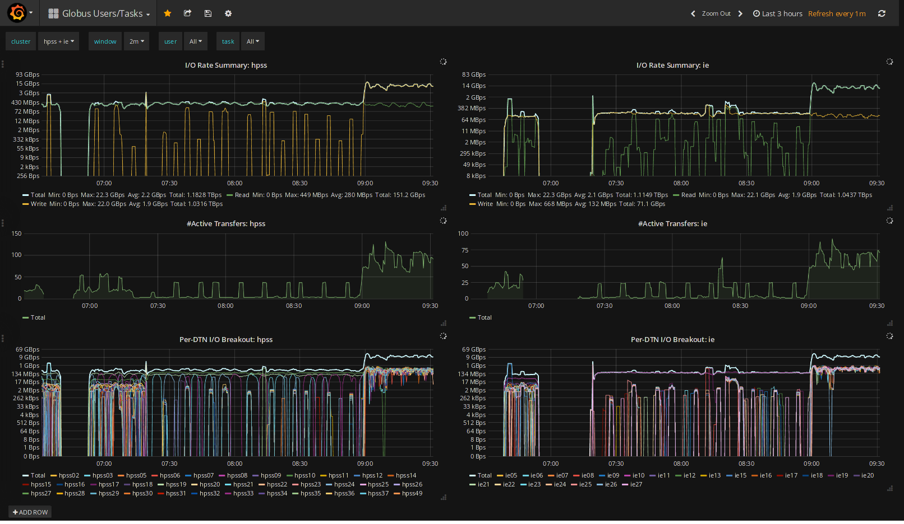

Introduction
If a picture equals a thousand words...
What pictures are hiding in globus logs...
50GB logs per day, 300M log lines
David Raila - Sr. Engineer NCSA Storage Group/Blue Waters
I'm going to talk about
My problems ... I mean challenges...
operating large globus endpoints
the tools I used and how they work
and how you can use them too
About Going from
Oct 11 03:58:42 hpss12 globus-gridftp-server[45623]: dsi[../../../source/module/dsi.c:117]dsi_init: GridFTP HPSS DSI 2.4: COMMIT: log level 3
Oct 11 03:58:43 hpss12 globus-gridftp-server[45623]: Transfer stats: DATE=20171011085843.469040 HOST=hpss-md12.ncsa.illinois.edu PROG=globus-gridftp-server NL.EVNT=FTP_INFO START=20171011085842.725508 USER=liska SHARE=0 SHAREE=none FILE="/u/sciteam/liska/project.bady/07042017/TDISKS25A93T45S/dumps515/new_dumpdiag11" BUFFER=87380 BLOCK=262144 NBYTES=311040000 VOLUME=/ STREAMS=1 STRIPES=1 DEST=[141.142.176.66] TYPE=RETR CODE=226 TASKID=97b43ee2-ae0f-11e7-afcf-22000a92523b retrans=0
Oct 11 03:58:45 hpss12 globus-gridftp-server[45623]: Transfer stats: DATE=20171011085845.011820 HOST=hpss-md12.ncsa.illinois.edu PROG=globus-gridftp-server NL.EVNT=FTP_INFO START=20171011085844.313072 USER=liska SHARE=0 SHAREE=none FILE="/u/sciteam/liska/project.bady/07042017/TDISKS25A93T45S/dumps523/new_dumpdiag6" BUFFER=87380 BLOCK=262144 NBYTES=311040000 VOLUME=/ STREAMS=1 STRIPES=1 DEST=[141.142.176.66] TYPE=RETR CODE=226 TASKID=97b43ee2-ae0f-11e7-afcf-22000a92523b retrans=0
Oct 11 03:58:46 hpss12 globus-gridftp-server[45623]: Transfer stats: DATE=20171011085846.564444 HOST=hpss-md12.ncsa.illinois.edu PROG=globus-gridftp-server NL.EVNT=FTP_INFO START=20171011085845.837304 USER=liska SHARE=0 SHAREE=none FILE="/u/sciteam/liska/project.bady/07042017/TDISKS25A93T45S/dumps524/new_dumpdiag6" BUFFER=87380 BLOCK=262144 NBYTES=311040000 VOLUME=/ STREAMS=1 STRIPES=1 DEST=[141.142.176.66] TYPE=RETR CODE=226 TASKID=97b43ee2-ae0f-11e7-afcf-22000a92523b retrans=0
Oct 11 03:58:48 hpss12 globus-gridftp-server[45623]: Transfer stats: DATE=20171011085848.028754 HOST=hpss-md12.ncsa.illinois.edu PROG=globus-gridftp-server NL.EVNT=FTP_INFO START=20171011085847.391681 USER=liska SHARE=0 SHAREE=none FILE="/u/sciteam/liska/project.bady/07042017/TDISKS25A93T45S/dumps529/new_dumpdiag11" BUFFER=87380 BLOCK=262144 NBYTES=311040000 VOLUME=/ STREAMS=1 STRIPES=1 DEST=[141.142.176.66] TYPE=RETR CODE=226 TASKID=97b43ee2-ae0f-11e7-afcf-22000a92523b retrans=0
Oct 11 03:58:49 hpss12 globus-gridftp-server[45623]: Transfer stats: DATE=20171011085849.599464 HOST=hpss-md12.ncsa.illinois.edu PROG=globus-gridftp-server NL.EVNT=FTP_INFO START=20171011085848.890210 USER=liska SHARE=0 SHAREE=none FILE="/u/sciteam/liska/project.bady/07042017/TDISKS25A93T45S/dumps529/new_dumpdiag12" BUFFER=87380 BLOCK=262144 NBYTES=311040000 VOLUME=/ STREAMS=1 STRIPES=1 DEST=[141.142.176.66] TYPE=RETR CODE=226 TASKID=97b43ee2-ae0f-11e7-afcf-22000a92523b retrans=0
Oct 11 03:58:50 hpss12 xinetd[11582]: EXIT: gsiftp status=0 pid=45623 duration=8(sec)
To
BlueWaters challenges
~ 30PB online storage
~ 300PB nearline storage
80 globus servers
> 3 Tbps aggregate bandwidth
>1000 users/ 10-100 TB per-day
Operational Challanges
Users - transfer performance questions
Collaborators - performance investigations
Scale - monitoring 80 nodes @ 40Gbps is hard
Grepping/correlating 50GB of log - intractible
Drowning in production - no time to improve
solution: Apply Metrics
Collect higher-order operational data
See what the system is doing visually
- Leverage the visual cortex
Graphical tools to drill-down into problems
Enable Dashboards and automated alterting
Understanding Metrics/Logs
Logs are an exact account of discrete events
- A bank statement is a log, precise/auditable
Metrics are sampled indicators of performance
- A credit score is a metric, an approximate indicator
Logs and Metrics are complimentary - use both
Measures: services/resources
Resource metrics - apply the USE method
Utilization, Saturation, Error-rate
Service metrics - apply the RED method
Request-rate, Error-rate, Duration-of-request
Practical Tooling - Prometheus
Best of breed metrics system
Cloud Native Computing Foundation project
Golang implementation - efficient and easy
- Single binary, no packaging or dependencies
- Simple yaml configuration - 2 file deployment
Prometheus Components
Prometheus - Time Series Database + Query Language
Collectors - Tiny, specific, metrics collectors
- OS, DB's, filesystems, languages - integrates everything
Graphical Interface for navigation/drill-down - Grafana
Alert Manager - Automated alerts based on metrics
Primarily tiny tight efficient golang apps
Implementation Basics
No globus metrics endpoint, but we hae syslogs
Deploy mtail - scrapes syslog data to metrics
All metrics as counts - leverage prometheus model
- Simplifies resets, overflows, and corner cases
Applicable in many other scenarios - systems and code
Implementation Detail
Mtail counts all events as they arrive on gridftp logs
- label/dimension by source/dest, transfer-id, user, server
Prometheus scrapes mtail on 15 second intervals
Gives 30 sec visibility - Nyquist
Implementation - Monitoring
PromQL queries embedded in grafana
Supports interactive investigation
Support for non-interactive dashboards
Supports templating and re-use
Slides
Not a coder? Not a problem. There's a fully-featured visual editor for authoring these, try it out at https://slides.com.
Point of View
Press ESC to enter the slide overview.
Hold down alt and click on any element to zoom in on it using zoom.js. Alt + click anywhere to zoom back out.
Touch Optimized
Presentations look great on touch devices, like mobile phones and tablets. Simply swipe through your slides.
Fragments
Hit the next arrow...
... to step through ...
... a fragmented slide.
Fragment Styles
There's different types of fragments, like:
grow
shrink
fade-out
fade-up (also down, left and right!)
current-visible
Highlight red blue green
Transition Styles
You can select from different transitions, like:
None -
Fade -
Slide -
Convex -
Concave -
Zoom
Themes
reveal.js comes with a few themes built in:
Black (default) -
White -
League -
Sky -
Beige -
Simple
Serif -
Blood -
Night -
Moon -
Solarized
Slide Backgrounds
Set data-background="#dddddd" on a slide to change the background color. All CSS color formats are supported.
Image Backgrounds
<section data-background="image.png">Tiled Backgrounds
<section data-background="image.png" data-background-repeat="repeat" data-background-size="100px">Video Backgrounds
<section data-background-video="video.mp4,video.webm">... and GIFs!
Background Transitions
Different background transitions are available via the backgroundTransition option. This one's called "zoom".
Reveal.configure({ backgroundTransition: 'zoom' })Background Transitions
You can override background transitions per-slide.
<section data-background-transition="zoom">Pretty Code
function linkify( selector ) {
if( supports3DTransforms ) {
var nodes = document.querySelectorAll( selector );
for( var i = 0, len = nodes.length; i < len; i++ ) {
var node = nodes[i];
if( !node.className ) {
node.className += ' roll';
}
}
}
}
Code syntax highlighting courtesy of highlight.js.
Marvelous List
- No order here
- Or here
- Or here
- Or here
Fantastic Ordered List
- One is smaller than...
- Two is smaller than...
- Three!
Tabular Tables
| Item | Value | Quantity |
|---|---|---|
| Apples | $1 | 7 |
| Lemonade | $2 | 18 |
| Bread | $3 | 2 |
Clever Quotes
These guys come in two forms, inline: The nice thing about standards is that there are so many to choose from
and block:
“For years there has been a theory that millions of monkeys typing at random on millions of typewriters would reproduce the entire works of Shakespeare. The Internet has proven this theory to be untrue.”
Intergalactic Interconnections
You can link between slides internally, like this.
Speaker View
There's a speaker view. It includes a timer, preview of the upcoming slide as well as your speaker notes.
Press the S key to try it out.
Export to PDF
Presentations can be exported to PDF, here's an example:
Global State
Set data-state="something" on a slide and "something"
will be added as a class to the document element when the slide is open. This lets you
apply broader style changes, like switching the page background.
State Events
Additionally custom events can be triggered on a per slide basis by binding to the data-state name.
Reveal.addEventListener( 'customevent', function() {
console.log( '"customevent" has fired' );
} );
Take a Moment
Press B or . on your keyboard to pause the presentation. This is helpful when you're on stage and want to take distracting slides off the screen.
Much more
- Right-to-left support
- Extensive JavaScript API
- Auto-progression
- Parallax backgrounds
- Custom keyboard bindings